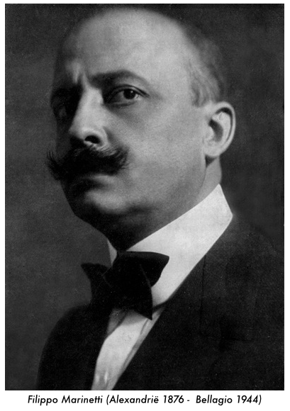
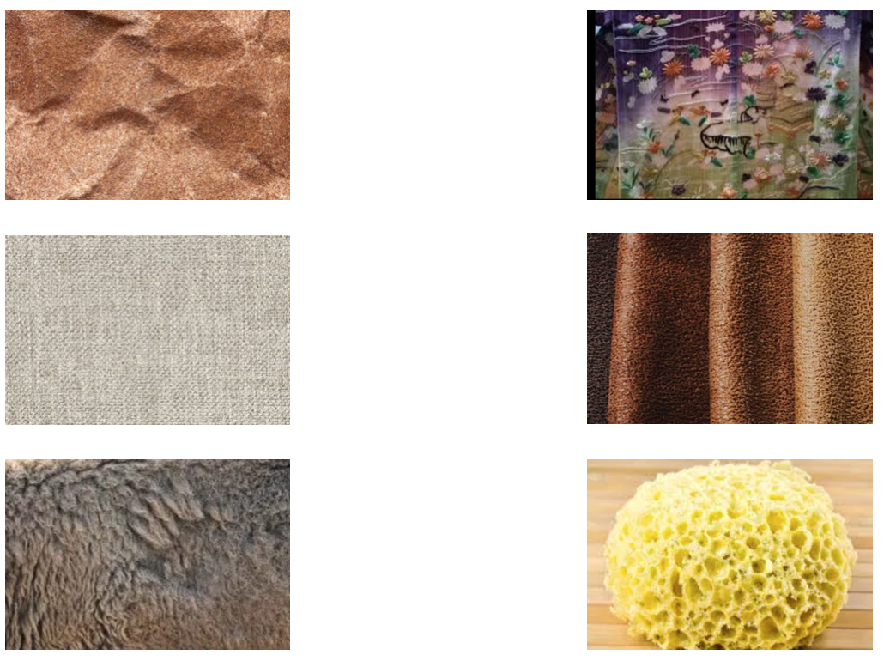
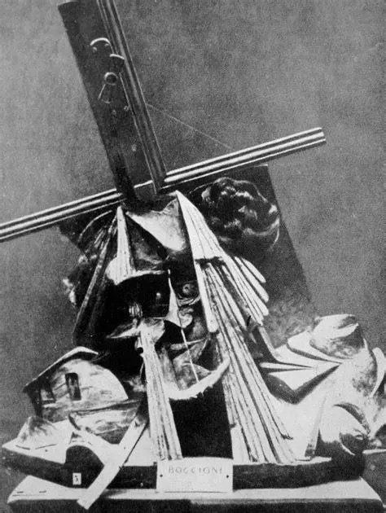
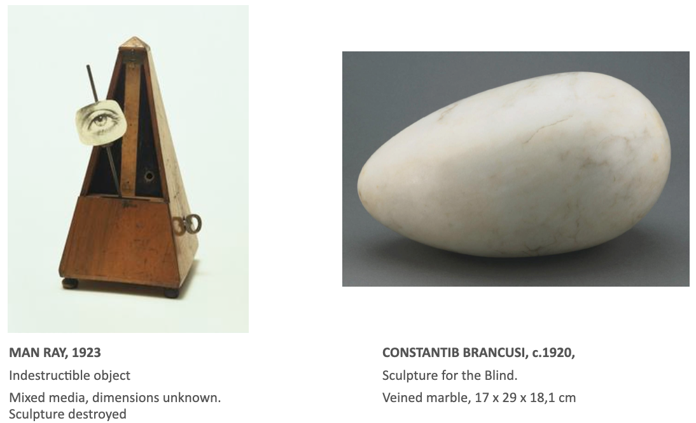

Chapter 6
In 1921, in the aftermath of the First World War, Filippo Marinetti published his Tactile Manifest (Manifesto Tattilismo). In it, he states that Futurist Movement, with its emphasis on war, speed, progress and movement, is being rejected by both the intellectual minority as the materialistic majority. According to him, the intellectuals and the materialists keep the Futuristic Movement responsible for the misfortunes of the people – in the past, present and in the future (loro sventure passate, presente e future).
Marinetti warns against a radical turnaround. The experiences of the war should not be seen as an argument against progress and the dynamics of modern life. People should not start considering a laughable return to the life of the nobel savage (ritorno assurdo alla vita selvaggi). Instead, he states, we should cure the world of the post-war suffering and try to enhance the mutual communication, and in so doing minimize the distance between individual human beings.
Most of the communication between people, the manifest continues, uses the mouth or the eyes. Using these modalities, however, misses a certain true sincerity (una vera sincerità), because the skin, the tactile experience, is almost never truely involved in communication. Mouth and eyes communicate essences, but touch communicates almost nothing. To make up for this, he describes a method to enhance the communication by touch (especially the hands). He gives methods to train sense of touch and at the same time gives categories in which touched objects can be devided.

In order to clarify these categories, Marinetti created eleven tactile artworks. Perhaps surprisingly, it is the explicit purpose of these works that people touch them – either indivdually or together. This seems to be a diversion of the more traditional artworks that are more aimed at sight and hearing. This diversion was also clear to the creator. The tactile art, according to him, has nothing to gain and everything to loose when it is compared to painting or sculpture (non ha nulla a che fare, nulla da guadagnare e tutto da perdere con la pittura o la scultura).

1921, tactile art was not something new. Marinetti himself states that the work Fusione di una testa e di una finestra, made already in 1911 by his good friend Umberto Boccioni, can be seen as a tactile art-work. Though not explicitely meant to be touched, the materials involved (porcelain, iron, and women hairs) have certain features that seem to invite viewers to touch it.

Apart from this, also the early ReadyMades by Duchamp can be seen as tactile art works. Thus, the Roue de Bicyclette (1913) displays a clear invitation to be turned, and it is known that Duchamp himself had a strange pleasure in doing so himself.
Two other interesting examples of early tactile art concerns the Sculpture for the Blind by Constantin Brâncuși (1916) en Indestructible Object by Man Ray (1923). The first of these two concerns a piece of polished marmer in the shape of an egg. Alas, in modern times, it is not allowed to actually touch these works, but both the shape and the title suggest a certain tactile experience (one can almost image touching it without doing so).
As for the Indestructible Object, this is a modified metronome with at the top a cut-out picture of an eye. In this case, the tactile experience seems to lie more in its title than in the actual work, though a metronome is, of course, an object that is meant to be touched. However, in both cases a strange but clear tension between the work and the observer is present.

The Futuristic tradition that was the source of the Tactile movement, was also manifest in the soirées, cabarets, and walks (sic) of the dadaists and the surrealists, among others. The active participation of the observer in these cases seems to severe the imaginary wall between the work and the public, or between the artist and the art-consumers – exactly what the Futuristic Manifest prescribes.
A nice example of this wall-breaking is the boxing event between the dadais artist Arthur Cravans and the then world champion Jack Johnson, in 1916. The purely physical of this event, the role of the public as a necessity to give this works its meaning, and the inevatable knock-out in the first round give this performance a shocking dynamic and interactivity that was revolutionary at the time.
Really actually touching artworks started to become main-stream two decades later, when Duchamp (him again) decorates the catalogue of an exhibition on surrealism with a latex woman's breast and the title Prière de Toucher (Please Touch). In this work, the physical division of art-work and observer seems really to be broken.
Today, the tradition of interactivity in art has become more main-stream than one could have imagined in the first quarter of the previous century. Most notably in games, but also in the more traditional artworld a whole tradition of what has come to be known as interactive art has emerged. People such as Jeffrey Shaw, Paul Sermon,Marnix de Nijs or Daan Roosegaarde, to name but a few examples, create works in which the active participation of the public is essential to let the work come to the light.
Starting in the eightees, this movement also created its own podia and festivals, such as Ars Electronica or STRP. With the emergence of the affordable computer at the same period, the creation of this type of art has become even more rapid. But one can see that the origins of this movement can be traced back hundred years to Italy.
The original text of the Manifesto Tattilismo can be read here; a (not completely accurate) English translation can be found here.
A decription of Prière de Toucher can be found at the site of the Philidelphia Museum of Art. The Indestructible Object is described at the site of the Tate Gallery, Sculpture for the Blind is also on display in the Philadelphia Museum of Art.
The boxing match between Cravans and Johnson is described at this page of Booktryst.
Also, have look at (and especially listen to) Music For 16 Futurist Noise Intoners.